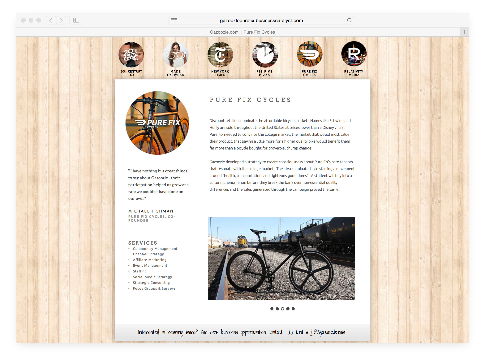

            <div class="container">
                <div class="row">
                    <div class="col-lg-8 col-lg-offset-2">
                        <div class="modal-body">
                            <!-- Project Details Go Here -->
                            <h2>Gazoozle</h2>
                            <p class="item-intro text-muted">Front-End Development</p>
                            <div class="row">
	                            <div class="col-lg-12 col-md-12 col-xs-12">
		                            
	                            </div>
                            </div>
                            <p>Gazoozle is a college-centric marketing and ad agency that was in its startup phase when I joined. I was brought in to get the ball-rolling on their web presence, while developing a website for Gazoozle as well as web assets for their clients. Some of these clients included (but not limited to) Columbia Pictures (22 Jump Street), Made Eyewear, and BPong.</p>
                            <ul class="list-inline">
                                <li><b>Date:</b> March 2014</li>
                                <li><b>Client:</b> Gazoozle</li>
                                <li><b>Category:</b> Front-End Development.</li>
                            </ul>
                            <button type="button" class="btn btn-primary" data-dismiss="modal"><i class="fa fa-times"></i> Close Project</button>
                        </div>
                    </div>
                </div>
            </div>